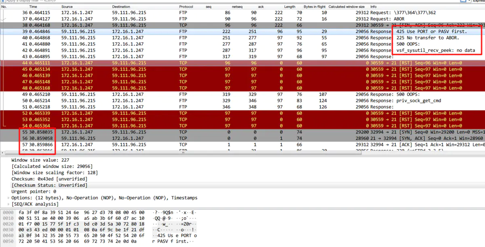

问题
通过vpc环境的云主机，使用ftp client 主动模式连接ftp server，总会卡30秒，然后才能继续操作。
分析
现象比较诡异，分析一下
- 首先网络不是不通
- telnet端口也ok
- 卡30秒，之后操作正常
我们抓个包看一下。
客户端 ： 172.16.1.247
服务端： 59.111.96.215

image.png
首先看到的是，0-0.46秒的时候，客户端连服务端，然后莫名的被服务端rst掉了。过了30秒之后，客户端再次发起连接。
我们往上看，rst的包前面，服务端回了500 oops。以及425 use port or pasv。
image.png
再看前面的包，Request: PORT 172,16,1,247,201,1999。 其中这个port命令，给的是这个客户端云主机的私有网ip。
拿这些信息去Stack Overflow上一搜，就发现类似的问题（https://stackoverflow.com/questions/15022629/lftp-active-mode-with-servers-that-do-not-recognize-the-port-command）。
主要原因是，客户端通过主动模式，会给服务端一个自己的地址，让服务端来连，但是这个云主机给的是一个私有网地址，导致服务端连接不了，所以报了一个500 oops的错误。
30秒之后，lftp又通过被动模式，去连接了ftp服务器。这次没有问题，可以看到对应的报文。所以这个30秒是卡在了lftp切换到被动模式这个时间上。
image.png
ftp debug模式
如果不抓包，ftp本身就有debug模式可以分析。
我找了另一台云主机进行测试。
1
2
3
4
5
6
7
8
9
10
11
12
13
14
15
16
17
18
19
20
21
22
23
24
25
26
27
28
29
30
31
32
33
34
35
36
37
38
39
40
41
42
43
44
45
46
47
48
49
50
51
52
53
54
55
56
57
58
59
60
61
62
63
64
65
66
67
68
69
70
71
72
73
74
75
76
77
78
79
80
81
82
83
84
85
86
87
88
89
90
91
92
93
94
95
96
97
98
99
100
101
102
103
104
105
106
107
108
109
110
111
112
113
|
root@vpc-ci-testrhamnf-2018-08-16-0953-dongguan1:~# lftp -e 'debug 10;set ftp:passive-mode off; set ftp:auto-passive-mode no; ls; bye;' -u sammy,qazwsx123 ftp://59.111.96.215
---- dns cache hit
---- attempt number 1 (max_retries=1000)
---- Connecting to 59.111.96.215 (59.111.96.215) port 21
<--- 220 (vsFTPd 2.3.5)
---> FEAT
<--- 211-Features:
<--- EPRT
<--- EPSV
<--- MDTM
<--- PASV
<--- REST STREAM
<--- SIZE
<--- TVFS
<--- UTF8
<--- 211 End
---> OPTS UTF8 ON
<--- 200 Always in UTF8 mode.
---> USER sammy
<--- 331 Please specify the password.
---> PASS qazwsx123
<--- 230 Login successful.
---> PWD
<--- 257 "/"
---> PORT 192,168,0,2,144,47
<--- 500 Illegal PORT command.
---> LIST
---> ABOR
---- Closing aborted data socket
---- Closing control socket
---- dns cache hit
---- attempt number 2 (max_retries=1000)
---- Connecting to 59.111.96.215 (59.111.96.215) port 21
<--- 220 (vsFTPd 2.3.5)
---> FEAT
<--- 211-Features:
<--- EPRT
<--- EPSV
<--- MDTM
<--- PASV
<--- REST STREAM
<--- SIZE
<--- TVFS
<--- UTF8
<--- 211 End
---> OPTS UTF8 ON
<--- 200 Always in UTF8 mode.
---> USER sammy
<--- 331 Please specify the password.
---> PASS qazwsx123
<--- 230 Login successful.
---> PORT 192,168,0,2,235,222
<--- 500 Illegal PORT command.
---> LIST
---> ABOR
---- Closing aborted data socket
---- Closing control socket
---- dns cache hit
---- attempt number 3 (max_retries=1000)
---- Connecting to 59.111.96.215 (59.111.96.215) port 21
<--- 220 (vsFTPd 2.3.5)
---> FEAT
<--- 211-Features:
<--- EPRT
<--- EPSV
<--- MDTM
<--- PASV
<--- REST STREAM
<--- SIZE
<--- TVFS
<--- UTF8
<--- 211 End
---> OPTS UTF8 ON
<--- 200 Always in UTF8 mode.
---> USER sammy
<--- 331 Please specify the password.
---> PASS qazwsx123
<--- 230 Login successful.
---> PORT 192,168,0,2,149,223
<--- 500 Illegal PORT command.
---> LIST
---> ABOR
---- Closing aborted data socket
---- Closing control socket
---- dns cache hit
---- attempt number 4 (max_retries=1000)
---- Connecting to 59.111.96.215 (59.111.96.215) port 21
<--- 220 (vsFTPd 2.3.5)
---> FEAT
<--- 211-Features:
<--- EPRT
<--- EPSV
<--- MDTM
<--- PASV
<--- REST STREAM
<--- SIZE
<--- TVFS
<--- UTF8
<--- 211 End
---> OPTS UTF8 ON
<--- 200 Always in UTF8 mode.
---> USER sammy
<--- 331 Please specify the password.
---> PASS qazwsx123
<--- 230 Login successful.
---> PORT 192,168,0,2,172,211
<--- 500 Illegal PORT command.
---> LIST
---> ABOR
---- Closing aborted data socket
---- Closing control socket
Interrupt
root@vpc-ci-testrhamnf-2018-08-16-0953-dongguan1:~#
|
同样可以看到相关的错误。
结论
Stack Overflow 上总结说，主动模式的ftp连接是一种“防火墙不友好”的 协议。可能设计之初，没有考虑到现代网络这些NAT，防火墙的种种玩法，解决方法就是换成被动模式去连接。
类似问题搜索下，vpc环境（阿里云，aws，goolge云）都有该问题。